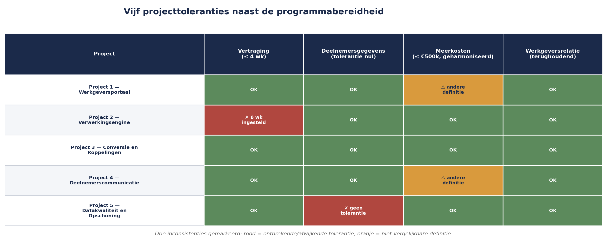

Cursus Risicomanagement · Niveau 2 (M_o_R 4/IRM) · Deel 12 van 30
Risicobereidheid, -capaciteit en toleranties.
Sanne vraagt de vijf projectmanagers van het Mutatieplatform-programma naar hun risicobereidheid en krijgt vijf vage antwoorden — een falen van het programma, niet van de projectmanagers, want er is nooit een risicobereidheid vastgesteld die zij konden overnemen. Dit deel maakt het onderscheid tussen risicobereidheid, risicocapaciteit en risicotolerantie hard, en beantwoordt de vraag die PM-cursus deel 18 bewust liet liggen: kan een programma een andere risicobereidheid hebben dan de optelsom van zijn projecten?
6secties
±2uleestijd + werkboek
8controlevragen
3kernbegrippen §12.1
Positionering. Deze cursus is een voorbereiding op M_o_R 4 Practitioner (PeopleCert) en het IRM International Certificate in ERM (Institute of Risk Management), en uitdrukkelijk geen vervanging van het officiële examenmateriaal van die instanties. Controleer bij inschrijving altijd het actuele aanbod, de kosten en de examenvorm bij PeopleCert, het IRM of uw opleider zelf; informatie in dit materiaal is geverifieerd in augustus 2026 en kan wijzigen.
Niveau 2: 11 M_o_R 4: van project naar de hele onderneming → 12 Risicobereidheid, -capaciteit en toleranties (hier) → 13 Identificatie op programmaschaal → 14 Kwantitatief I: verwachtingswaarde, beslisbomen, drie-puntsschattingen → 15 Kwantitatief II: Monte Carlo-simulatie → 16 Bow-tie-analyse: oorzaken, gevolgen en barrières die je test → 17 Geaggregeerd risico en risico in verschillende leveringsmodellen → 18 IT- en cyberrisico → 19 Rapportage en besluitvorming → 20 Risicocultuur en gedrag → 21 De risicofunctie inrichten → 22 Examentraining en capstone: de geaggregeerde verdediging
01
Vijf projecten, vijf stiltes
⏱ 8 min
Sanne Bakhuis vraagt de vijf projectmanagers van het Mutatieplatform-programma naar hun risicobereidheid. Ze krijgt vijf verschillende antwoorden, en geen daarvan is eigenlijk een antwoord.
De projectmanager van Werkgeversportaal zegt: "We zijn best voorzichtig, denk ik."
De projectmanager van Verwerkingsengine zegt: "We proberen risico's te vermijden waar het kan."
De projectmanager van Datakwaliteit en Opschoning — het project met misschien wel het hoogste risicoprofiel, gezien de gevoeligheid van historische deelnemersdata — zegt niets specifieks, want daar is nooit over nagedacht.
Dit is geen falen van de vijf projectmanagers. Het is een falen van het programma: er is nooit een risicobereidheid vastgesteld die zij konden overnemen. Dit deel lost dat op, en werkt uit wat in niveau 1 (deel 3) nog maar een grove, verbale eerste stap was.
02
Drie begrippen, drie vragen
⏱ 12 min
Risicobereidheid (risk appetite) is een bestuurlijke, kwalitatieve uitspraak over hoeveel en welk type risico een organisatie of programma bereid is te accepteren om haar doelstellingen te bereiken. Het antwoordt op de vraag: waarom accepteren we bepaald risico wel en ander risico niet?
Risicocapaciteit (risk capacity) is het objectieve maximum aan risico dat een organisatie kan dragen zonder haar voortbestaan, reputatie of wettelijke positie in gevaar te brengen — een harde grens, geen keuze. Het antwoordt op de vraag: wat kunnen we maximaal dragen, los van wat we willen?
Risicotolerantie (risk tolerance), zoals in deel 8 (niveau 1) geïntroduceerd, is de operationele, meetbare bandbreedte per doelstelling waarbinnen afwijking geen escalatie vereist. Het antwoordt op de vraag: bij welke concrete afwijking grijpen we in?
De verhouding tussen de drie is hiërarchisch en niet uitwisselbaar: risicocapaciteit is het buitenste, harde plafond; risicobereidheid is een bewuste, meestal voorzichtiger keuze daarbinnen; toleranties zijn de operationele vertaling van die bereidheid naar concrete, meetbare grenzen per project of doelstelling.
Figuur 12-1 — Drie concentrische cirkels: buitenste = risicocapaciteit (hard plafond), middelste = risicobereidheid (bewuste keuze), binnenste = toleranties (de concrete, per doelstelling gemeten grenzen).
Een veelgemaakte fout is risicobereidheid en risicocapaciteit gelijk te stellen. Een organisatie kan een grote capaciteit hebben (financieel gezond, goed gekapitaliseerd) en toch een lage bereidheid kiezen (voorzichtig, om reputatieredenen) — of omgekeerd, een beperkte capaciteit hebben en toch, onder druk, een hogere bereidheid tonen dan verantwoord is. Dat laatste is precies het patroon dat in niveau 3 (deel 24) bij strategisch risico wordt onderzocht.
Controlevragen
Uit Werkboek deel 12, Opdracht 12.1 — drie begrippen sorteren
1"Meridiaan kan, gegeven haar solvabiliteitspositie, maximaal €50 miljoen aan onvoorziene verplichtingen dragen zonder in de gevarenzone te komen." Is dit risicocapaciteit, risicobereidheid of risicotolerantie?Toon antwoord
Risicocapaciteit. Een objectief, berekend maximum, geen keuze.
2"Wij zijn terughoudend met risico's die de relatie met werkgevers kunnen schaden." Is dit risicocapaciteit, risicobereidheid of risicotolerantie?Toon antwoord
Risicobereidheid. Een bestuurlijke, kwalitatieve uitspraak zonder concreet getal.
3"Tot twee weken vertraging op Project 2: geen escalatie. Meer: melden aan de Sponsoring Group." Is dit risicocapaciteit, risicobereidheid of risicotolerantie?Toon antwoord
Risicotolerantie. Een concrete, meetbare bandbreedte voor een specifiek project.
03
Van boardroom-taal naar tolerantie
⏱ 14 min
Risicobereidheid wordt meestal in kwalitatieve, bestuurlijke taal geformuleerd — en dat is op zichzelf geen fout. Het probleem ontstaat als die taal nooit wordt vertaald.
Kernzin 7
Risicobereidheid zonder vertaling naar tolerantie is een mooie zin op een poster — ze verandert niets aan wat iemand morgen beslist.
Voor het Mutatieplatform-programma stelt de Sponsoring Group, op voordracht van Sanne, een risicobereidheid-verklaring vast in vier regels:
"Wij accepteren vertraging in individuele projecten tot vier weken, zolang het programmadoel (doorlooptijdhalvering per 1 januari volgend jaar) niet in gevaar komt."
"Wij accepteren geen enkel risico dat de juistheid van deelnemersgegevens in gevaar brengt, in geen van de vijf projecten."
"Wij zijn bereid meerkosten tot €500.000 op programmaniveau te accepteren om de doorlooptijd van het programma te bewaken."
"Wij zijn terughoudend met risico's die de relatie met werkgevers als klant kunnen schaden, ook als de financiële impact daarvan beperkt is."
Elke regel wordt vervolgens vertaald naar concrete toleranties per project — dat is de vertaalslag die Kernzin 7 vereist. Regel 2 bijvoorbeeld wordt voor Project 5 (Datakwaliteit en Opschoning) een tolerantie van nul op elke afwijking in de opschoning van deelnemersdata, terwijl diezelfde regel voor Project 1 (Werkgeversportaal) vertaalt naar een tolerantie van nul op elke validatiefout in het portaal die tot onjuiste gegevensinvoer kan leiden. Dezelfde bereidheid, twee verschillende, project-specifieke toleranties.
Controlevraag
Uit Werkboek deel 12, Opdracht 12.2 — vertaal de bereidheid
1Vertaal regel 4 uit de risicobereidheid-verklaring ("wij zijn terughoudend met risico's die de relatie met werkgevers kunnen schaden") naar een concrete tolerantie voor het Werkgeversportaal-project.Toon antwoord
Bijvoorbeeld: "Elke storing die werkgevers verhindert een mutatie in te dienen gedurende meer dan vier uur tijdens kantooruren wordt gemeld aan de Sponsoring Group, ongeacht de onderliggende technische oorzaak of de financiële impact." Deze tolerantie is kwalitatief streng (lage drempel), passend bij een bereidheid die uitdrukkelijk "terughoudend" is — ook al is de financiële impact van een enkele storing beperkt. Dit illustreert dat een tolerantie niet altijd in geld hoeft te worden uitgedrukt.
04
Risicobereidheid programma versus project
⏱ 12 min
Dit is de vraag die zowel in de goedgekeurde opzet van deze cursus als in PM-cursus deel 18 expliciet is aangestipt, en die nu een antwoord krijgt: kan een programma een andere risicobereidheid hebben dan de optelsom van zijn projecten?
Het antwoord is ja, en de reden is fundamenteel: een programma heeft doelstellingen die geen van de individuele projecten alleen draagt. De doorlooptijdhalvering is geen doelstelling van Project 2 (Verwerkingsengine) alleen, noch van Project 1 (Werkgeversportaal) alleen — ze is het product van hun samenwerking. Dat betekent dat de programma-risicobereidheid soms strenger moet zijn dan wat elk project afzonderlijk zou kiezen: een risico dat voor Project 2 op zichzelf aanvaardbaar lijkt (bijvoorbeeld twee weken vertraging), kan op programmaniveau onaanvaardbaar zijn als diezelfde twee weken de geplande integratietest met Project 1 blokkeren en daarmee een cascade-effect veroorzaken.
Omgekeerd kan de programma-risicobereidheid op sommige punten ook ruimer zijn dan een individueel project zou kiezen: Project 5 (Datakwaliteit) zou, op zichzelf beoordeeld, wellicht liever meer tijd nemen voor grondige opschoning. Op programmaniveau kan de Sponsoring Group besluiten dat enige onvolkomenheid in historische data acceptabel is, zolang de nieuwe mutaties vanaf de livegang correct zijn — een andere afweging dan Project 5 in isolatie zou maken.
Dit spanningsveld — programma soms strenger, soms ruimer dan de som van de projecten — is precies waarom risicobereidheid niet top-down kan worden opgelegd zonder overleg, en niet bottom-up kan worden opgeteld zonder sturing. Het vereist een expliciet gesprek, gefaciliteerd door de programma-risicomanager, tussen de programmadoelstellingen en de projectrealiteit.
Controlevragen
Uit Werkboek deel 12, Opdracht 12.3 — programma strenger of ruimer?
1Project 2 zou zelf een vertraging van zes weken acceptabel vinden; het programma staat slechts vier weken toe. Strenger of ruimer, en waarom?Toon antwoord
Strenger. Omdat Project 2 op het kritieke pad van het programmadoel ligt, veroorzaakt vertraging bij dit project een cascade-effect op andere projecten en daarmee op de doorlooptijdhalvering zelf — een risico dat voor het project alleen aanvaardbaar lijkt, is dat op programmaniveau niet.
2Project 5 zou zelf liever meer tijd nemen voor grondige historische opschoning; het programma accepteert enige onvolkomenheid, zolang nieuwe mutaties correct zijn. Strenger of ruimer, en waarom?Toon antwoord
Ruimer. Het programma accepteert hier meer risico dan het project zelf zou kiezen, omdat de Sponsoring Group een andere, programmabrede afweging maakt (voortgang boven perfectie in historische data, zolang de kern — nieuwe mutaties — klopt). Er is geen vaste regel dat "programma altijd strenger" of "altijd ruimer" is — het hangt af van hoe het project zich verhoudt tot het programmadoel: kritiek pad versus randvoorwaarde.
05
Risicocapaciteit: het harde plafond
⏱ 10 min
Waar risicobereidheid een keuze is, is risicocapaciteit een gegeven — al vraagt het vaststellen ervan wel degelijk analyse. Voor Meridiaan als geheel wordt de risicocapaciteit mede bepaald door factoren die buiten het Mutatieplatform-programma liggen: de solvabiliteitspositie van de verzekeraar, de wettelijke buffervereisten, en de reputatieschade die een grootschalig datalek zou veroorzaken bij een organisatie die deelnemersgegevens van honderdduizenden mensen beheert.
Voor een programma is het praktisch zelden nodig om een eigen, volledig aparte risicocapaciteit vast te stellen — die is doorgaans een afgeleide van de capaciteit van de organisatie als geheel. Wat wél relevant is op programmaniveau: weet welke van de vastgestelde toleranties in de buurt komen van de organisatiebrede capaciteit, in plaats van "slechts" de programma-bereidheid te raken. Regel 2 uit de risicobereidheid-verklaring (deelnemersgegevens) is zo'n grens: een grootschalige datakwaliteitscrisis zou niet alleen de programma-bereidheid overschrijden, maar mogelijk ook de organisatiebrede risicocapaciteit raken — en dat verandert wie er bij escalatie aan tafel hoort (terug naar de escalatieladder uit deel 8, niveau 1, die bij zo'n overschrijding rechtstreeks naar het hoogste niveau zou moeten springen).
Controlevraag
Uit Werkboek deel 12, Zelftoets vraag 5
1Waarom heeft een programma meestal geen eigen, aparte risicocapaciteit?Toon antwoord
Omdat risicocapaciteit meestal wordt bepaald door factoren op organisatieniveau (solvabiliteit, wettelijke buffers, reputatie), die niet per programma opnieuw worden vastgesteld.
06
Sanne's oefening: vijf toleranties, één bereidheid
⏱ 12 min
Met de risicobereidheid-verklaring uit paragraaf 12.2 als uitgangspunt, laat Sanne elk van de vijf projectmanagers hun eigen toleranties herzien. Het resultaat legt drie inconsistenties bloot die zonder deze oefening onopgemerkt zouden zijn gebleven:
Project 1 en Project 4 gebruikten verschillende definities van "meerkosten". Project 1 rekende alleen directe projectkosten, Project 4 rekende ook indirecte kosten (bijvoorbeeld tijdelijk ingehuurde capaciteit) mee. Voor de programma-brede tolerantie van €500.000 (regel 3) moet dit worden geharmoniseerd, anders is optellen zinloos — precies de vergelijkbaarheidseis uit deel 11.
Project 5 had helemaal geen tolerantie voor datakwaliteit vastgesteld, ondanks dat dit project het risico bij uitstek draagt waar regel 2 van de bereidheid-verklaring over gaat. Dit wordt onmiddellijk als eerste prioriteit opgepakt.
Project 2's eigen tolerantie voor vertraging (zes weken) was ruimer dan de programmabereidheid (vier weken, regel 1) toestond. Dit is een direct conflict, en het wordt opgelost door Project 2's tolerantie te verkleinen tot vier weken, met een aantekening waarom: de doorlooptijd van Project 2 is een kritiek pad voor het hele programmadoel.

Figuur 12-2 — Vijf projecten tegen de programmabereidheid afgezet, met de drie gevonden inconsistenties gemarkeerd.
Kort samengevat: risicocapaciteit, risicobereidheid en risicotolerantie zijn hiërarchisch en niet uitwisselbaar; een programma kan strenger of ruimer zijn dan de optelsom van zijn projecten; en vijf projecten met impliciete, ongecoördineerde toleranties leiden tot inconsistenties die pas zichtbaar worden als je ze naast elkaar legt.
Controlevraag
Uit Werkboek deel 12, Opdracht 12.4 — vind de inconsistentie
1Twee projecten hanteren beide "tot €30.000 meerkosten: geen escalatie" — maar Project A rekent alleen directe kosten mee, Project B ook indirecte kosten (zoals tijdelijke inhuur). Waarom zijn deze twee toleranties, ondanks het identieke bedrag, niet vergelijkbaar — en wat is het risico als de programma-risicomanager ze toch bij elkaar optelt?Toon antwoord
De twee toleranties meten feitelijk iets anders, ondanks het identieke bedrag: Project B's tolerantie dekt een breder kostenbegrip, dus in de praktijk staat Project B eigenlijk minder toe dan Project A bij een gelijk bedrag. Als de programma-risicomanager de twee grenzen zonder correctie bij elkaar optelt of vergelijkt in een rapportage, ontstaat een schijnvergelijking — precies de eis uit deel 11 dat schalen en criteria over projecten heen vergelijkbaar en optelbaar moeten zijn, wat een gedeelde definitie vereist, niet alleen een gedeeld getal. Dit probleem is structureel, niet incidenteel — het duikt bijna altijd op zodra je losstaande projecttoleranties voor het eerst naast elkaar legt.
Verder naar deel 13
Deel 13 gebruikt de nu geharmoniseerde toleranties en de vastgestelde risicobereidheid als basis voor identificatie op programmaschaal: welke risico's ontstaan niet binnen één project, maar juist in de ruimte ertussen — en welke technieken uit deel 4 (niveau 1) daarvoor moeten worden aangepast.